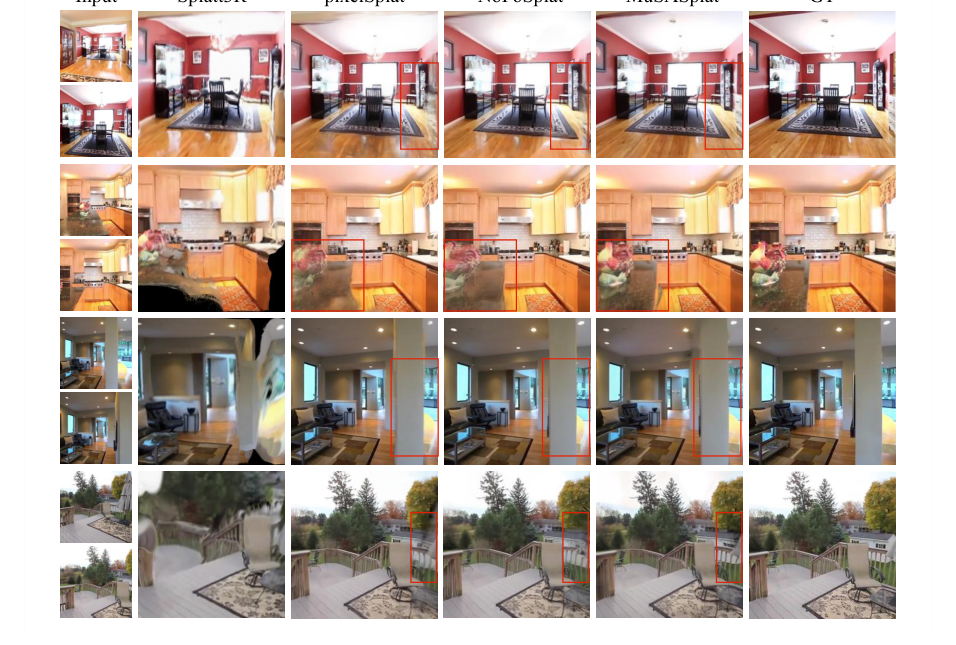

MuSASplat：通过轻量级多尺度 A 实现高效稀疏视图 3D 高斯图
简单摘要
基于NeRF与3DGS的三维重建虽在新视角合成方面表现优异，但大多数方法仍严重依赖数百张已知位姿的图像和逐场景优化。近期前馈网络虽免除了逐场景优化但仍需已知相机位姿（通常由SfM算法如COLMAP估计），该过程计算开销大且在稀疏视图条件下效果不佳。无位姿方法借助预训练前馈三维几何网络克服了对相机位姿的依赖，但全模型微调因需适配大型ViT骨干网络而消耗大量GPU资源。MuSASplat提出了多尺度适配器将被打散的令牌序列重建回空间特征图以保留图像的空间布局，然后应用多尺度深度可分离卷积以最少参数实现强大适配。特征融合聚合器取代主流多视图重建中的记忆库结构，对全部输入视图进行批量编码与解码，在编码器与解码器之间插入单个轻量聚合模块跨视角融合特征。

核心创新
设计多尺度适配器高效微调ViT骨干网络：将令牌序列重建回空间特征图以保留空间布局信息，再用多尺度深度卷积捕获不同感受野下的局部几何上下文，以极少的额外参数实现与全模型微调相媲美的表达能力。提出特征融合聚合器替代传统记忆库结构：支持同时批量处理所有输入视图，通过单层轻量聚合模块实现跨视角特征融合，大幅提升训练吞吐量并降低显存占用。
技术细节
DUSt3R 是一种基于 ViT 的方法，仅使用图像联合解决相机校准和 3D 重建问题。通过在共享坐标系 中回归两个点图，DUSt3R 有效地执行联合校准和 3D 重建。因此，当应用于稀疏视图 3D 重建时，配备 LoRA 的模型通常会生成不一致的几何形状、过度拟合局部外观线索或产生不存在的结构的幻觉。
3 方法
这一节先处理的是 我们的 MuSASplat 预测一组各向异性高斯分布，这些高斯分布用于新视图合成。作者这样设计，是为了先把输入表示、约束条件或中间状态整理成后续模块能直接使用的形式。
$$ \mathcal{G}=\{\mathrm{G}_{n}\}_{n=1}^{N}, \;\mathrm{G}_{n}=(\boldsymbol\mu_{n},\alpha_{n}, \boldsymbol\Sigma_{n},\mathbf{sh}_{n}) , $$
放在“方法”这一部分看，这条式子是在把 G 写成可直接计算的形式。右侧按元素列出了 G 的组成项，说明模型是在逐像素、逐高斯或逐候选地同时预测一整组属性，而不是只输出单个标量。
3.1 3.1 预备知识
相比之下，我们的方法估计每个视点图并将其投影到规范空间，从而直接从未校准的 RGB 图像实现一致的 3D 高斯监督。DUSt3R 是一种基于 ViT 的方法，仅使用图像联合解决相机校准和 3D 重建问题。通过在共享坐标系 中回归两个点图，DUSt3R 有效地执行联合校准和 3D 重建。作者这样设计，是为了把这一节的输入、约束和输出关系讲清楚。
3.2 3.2 多尺度适配器（MuSA）
低秩适应（LoRA）是一种广泛采用的参数高效微调策略。核心限制在于 LoRA 无法重新引入空间先验。因此，当应用于稀疏视图 3D 重建时，配备 LoRA 的模型通常会生成不一致的几何形状、过度拟合局部外观线索或 lazy' decoding='async' />
$$ \mathbf{Y}^{v} = \mathrm{reshape}(\mathbf{X}^{v} \mathbf{W}_{\downarrow}) \in \mathbb{R}^{C' \times h \times w}, $$
这条式子是在把高斯的协方差从原始三维坐标系变换到相机或成像平面相关的坐标系中。这样后续光栅化时，模型才能正确知道每个高斯在当前视角下会拉伸成怎样的椭圆分布。
$$ \mathbf{Z}^{v} = \tfrac{1}{3} \sum_{k \in \{3, 5, 7\}} \mathrm{DWConv}_{k}(\mathbf{Y}^{v}). $$
放在“方法”这一部分看，它重点在定义或约束 Z v 这一项。这条式子描述了多个分量的聚合或逐步合成过程。它通常表示模型如何把局部贡献、概率权重或多项损失累积成最终结果。
$$ \widehat{\mathbf{X}}^{v} = (\mathrm{GELU}(\mathrm{PWConv}(\mathbf{Z}^{v}) ) ) \mathbf{W}_{\uparrow}. $$
放在“方法”这一部分看，它重点在定义或约束 widehat X v 这一项。这条式子是在把高斯的协方差从原始三维坐标系变换到相机或成像平面相关的坐标系中。这样后续光栅化时，模型才能正确知道每个高斯在当前视角下会拉伸成怎样的椭圆分布。
$$ \mathbf{X}^{v}_{\text{out}} = \mathbf{X}^{v} + \widehat{\mathbf{X}}^{v}. $$
这条式子是在定义一个可直接计算的中间量：右侧把相对位置、方向、权重或比例关系组合起来，左侧则把这个组合结果记成后续模块要反复使用的变量。
3.3 3.3 MuSA迷你电网分支
围绕 3.3 3.3 MuSA迷你电网分支，人们可能会怀疑，恢复补丁内结构可能会带来进一步的收益，一旦一个区域被折叠成单个令牌，其信息将无法挽回地丢失。因此，我们插入一个迷你网格分支，将每个标记映射到特征图（此处），应用一个深度卷积，并将结果平均回标记大小的残差。由于补丁内像素的原始空间排列是未知的，因此分支实际上必须从头开始重新学习排列映射，这是一项受到稀疏 3D 监督约束的任务。
3.4 3.4 特征融合聚合器（FFA）
一些现有的多视图无姿态管道（例如 Spann3R 和 CUT3R）依赖于每个图像对更新一次的外部存储体。内存必须被读取和写入多次，这会在输入视图数量增加并存储每个视图的特征时减慢训练速度，从而导致 GPU 内存膨胀。我们不是迭代内存更新，而是在每个批次中同时处理所有输入视图。
$$ q^{v}_{\ell} = \sigma(\mathbf{w}_q^\top \mathbf{f}^{v}_{\ell}). $$
放在“方法”这一部分看，它重点在定义或约束 q v ell 这一项。这条式子是在定义一个可直接计算的中间量：右侧把相对位置、方向、权重或比例关系组合起来，左侧则把这个组合结果记成后续模块要反复使用的变量。
$$ w^{v}_{\ell} = \begin{cases} q^v_\ell \cdot \lambda & \text{if } b^v = 1 \\ q^v_\ell & \text{otherwise} \end{cases}. $$
放在“方法”这一部分看，这条式子是在把 w v ell 写成可直接计算的形式。它用分段规则来定义 w v ell 在不同条件下该取什么值，这样后续决策或推理过程就能按场景切换计算路径。
$$ \mathbf{A}^{v}= \mathrm{softmax} ( \frac{\mathbf{Q}^{v}(\mathbf{K}^{v})^\top}{\sqrt{d}} + \log \mathbf{M}^{v} ),\quad \widetilde{\mathbf{F}}^{v}= \mathbf{A}^{v}\mathbf{V}^{v}. $$
放在“方法”这一部分看，这条式子重点不是孤立地罗列符号，而是交代 A v 如何承接前面的输入并把结果交给后续步骤。
$$ \widehat{\mathbf{F}}^{v} = \mathbf{F}^{v} + \mathrm{MLP}( [ \mathbf{F}^{v}, \widetilde{\mathbf{F}}^{v} ] ). $$
放在“方法”这一部分看，它重点在定义或约束 widehat F v 这一项。这条式子是在定义一个可直接计算的中间量：右侧把相对位置、方向、权重或比例关系组合起来，左侧则把这个组合结果记成后续模块要反复使用的变量。
3.5 3.5 点云视点增强
当输入只有两个视图 时，高斯计数为 ，如果输入视图有重叠 (<30%)，则可能会导致未覆盖区域显示为空洞或过大的高斯分布。为了缓解这个问题，我们从相同的冻结 ViT 主干预测初始稀疏点云和相对姿态，然后是在高斯训练期间固定的点头。RGB 损失遵循 NoPoSplat，由渲染图像和地面实况图像之间的均方误差 (MSE) 和感知 LPIPS 损失 的加权和组成。作者这样设计，是为了把这一节的输入、约束和输出关系讲清楚。
$$ \bigl[\mathcal{P},\,\{\mathbf{T}_{v}\}\bigr] = g_{\boldsymbol\phi}\bigl( I^{1}, I^{2}\bigr), $$
放在“方法”这一部分看，这条式子重点不是孤立地罗列符号，而是交代 P , , T v 如何承接前面的输入并把结果交给后续步骤。
实验结论
我们首先介绍我们的训练设置和数据集，然后与之前的方法进行主要比较，最后通过消融和有针对性的替代研究来评估每个组件的贡献。尽管 NoPoSplat 在 RE10K 上实现了稍好的 PSNR，但我们的方法在所有指标上提供了更平衡的性能，包括 ACID 上较低的 LPIPS（0.189 与 0.189）。它还在两个数据集上实现了最佳的 SSIM 和 LPIPS，展示了我们的前馈多视图聚合在高可见性设置中的有效性。
然后，融合后的特征由轻量级 ViT 解码器进行解码，并传递给点头和高斯头，以生成用于渲染的 3D 高斯基元参数 LoRA 与我们提出的方案之间的比较。LoRA 通过两个线性层将低秩残差更新注入到冻结的预训练模型中，纯粹在令牌空间中运行，无需空间感知。MuSA 将标记的空间布局重建为特征图，在多个内核大小上应用深度卷积以捕获局部结构，并将适应的特征投影回标记流中。
| — | Method | Params(M) | RE10K | ACID | ||||
|---|---|---|---|---|---|---|---|---|
| — | — | — | PSNR | SSIM | LPIPS | PSNR | SSIM | LPIPS |
| 2-View Reconstruction | — | |||||||
| Pose-Required | pixelNeRF | - | 19.824 | 0.626 | 0.485 | 20.323 | 0.561 | 0.533 |
| — | AttnRend | - | 22.664 | 0.762 | 0.269 | 24.475 | 0.730 | 0.287 |
| — | pixelSplat | - | 23.848 | 0.806 | 0.185 | 25.819 | 0.779 | 0.195 |
| — | MVSplat | - | 23.977 | 0.811 | 0.176 | 25.512 | 0.773 | 0.196 |
| Pose-Free | DUSt3R | - | 15.382 | 0.447 | 0.432 | 16.286 | 0.411 | 0.447 |
| — | MASt3R | - | 14.907 | 0.431 | 0.452 | 16.179 | 0.409 | 0.461 |
| — | Splatt3R | 80 | 15.318 | 0.490 | 0.425 | 16.754 | 0.472 | 0.448 |
4.1 4.1 训练和评估设置
我们在双视图和多视图设置下与一系列可推广的 3D 重建方法进行比较。此外，为了进一步评估我们提出的特征融合聚合器的有效性，我们使用五视图输入进行实验，并与依赖传统存储库
4.2 4.2 主要结果
MuSASplat 在两个数据集上始终优于所有姿势要求基线，在 RE10K 上实现比最佳姿势要求方法 (MVSplat) 高 0.35 dB 的 PSNR，在 ACID 上比最佳姿势要求方法 (MVSplat) 高 0.29 dB。尽管 NoPoSplat 在 RE10K 上实现了稍好的 PSNR，但我们的方法在所有指标上提供了更平衡的性能，包括 ACID 上较低的 LPIPS（0.189 与 0.189）。
它还在两个数据集上实现了最佳的 SSIM 和 LPIPS，展示了我们的前馈多视图聚合在高可见性设置中的有效性。
4.3 4.3 成分分析和消融研究
我们还构建了一个名为 MuSASplat (LoRA3D) 的变体，用 LoRA3D 替换我们的适配器，它使用 LoRA 来微调大型 3D 几何基础模型。我们还通过在训练期间禁用点云（pcd）增强策略来评估其影响。为了评估 MuSA 适配器在不同架构中的普遍适用性，我们通过将两个适配器集成到两个不同的基本模型中，将其与 LoRA3D 进行比较。
| Variant | PSNR↑ | Speed (it/s) | Params (M) |
|---|---|---|---|
| MuSASplat (full) | 24.32 | 1.81 | 119 |
| w/o Adapter | 20.12 | 2.02 | 92 |
| w/o Aggregator | 23.50 | 1.96 | 113 |
| w/o Pcd Augmentation | 24.03 | 1.81 | 119 |
| MuSASplat(Lora3D) | 22.89 | 1.65 | 102 |
| MuSASplat(Memory Bank) | 23.66 | 0.43 | 155 |
| Model Variant | PSNR↑ | SSIM↑ | LPIPS↓ |
|---|---|---|---|
| NoPoSplat-LoRA3D | 21.72 | 0.741 | 0.283 |
| NoPoSplat-MuSA | 23.39 | 0.794 | 0.221 |
| SelfSplat-LoRA3D | 21.60 | 0.748 | 0.271 |
| SelfSplat-MuSA | 23.14 | 0.799 | 0.223 |
理解评价
如果把这篇论文放回问题背景里看，它真正的价值在于：虽然最近利用预训练 3D 先验的无姿态前馈方法取得了令人印象深刻的结果，但其中大多数依赖于大型 Vision Transformer (ViT) 主干的完全微调，并会产生大量 GPU 成本。这说明作者不是只补一个局部模块，而是在重新组织问题该怎样被解决。
最能支撑这个判断的，还是实验给出的证据：在这项工作中，我们引入了 MuSASplat，这是一种新颖的框架，它可以显着减少训练无姿势前馈 3D 高斯图模型的计算负担，而对渲染质量几乎没有影响。换句话说，这些设计并不只是概念上更完整，而是实实在在改变了最终结果。
当然，它离真正成熟的方案还有距离：当前方案的局限在于它仍然受制于计算资源、输入质量或场景复杂度，距离真正稳健的大规模部署还有差距。后续更值得继续推进的方向，是 未来继续提升效率、泛化能力以及在更复杂场景下的稳定性。